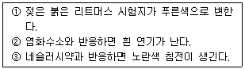
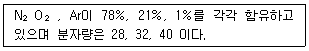
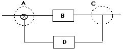

가스산업기사 (2006-03-05 기출문제)
1과목: 연소공학
1. 다음 유동층 연소의 특성에 대한 설명 중 옳지 않은 것은?
- 연소시 화염층이 작아진다.
- 크링커 장해를 경감할 수 있다.
- 질소산화물(NOx)의 발생량이 증가한다.
- 화격자의 단위 면적당 열분해를 크게 얻을 수 있다.
(정답률: 62%)

2. 메탄을 공기비 1.1로 완전 연소시키고자 할 때 메탄 1Nm3당 공급해야 할 공기량은 약 몇 m3N인가?
- 2.2
- 6.3
- 8.4
- 10.5
(정답률: 76%)
3. 연소율에 대한 설명 중 옳은 것은?
- 단위화상의 면적량에 대한 최대증발량이다.
- 1일 석탄소비량에 의해 발생되는 최대 증발량이다.
- 화상의 단위면적에 있어 단위시간에 연소하는 연료의 증량이다.
- 연소실의 단위용적으로 1시간당 연소하는 연료의 증량이다.
(정답률: 55%)
4. 0℃, 1atm에서 2L의 산소와 0℃, 2atm에서 3L의 질소를 혼합하여 1L로 하면 압력은 몇 atm인가?
- 1
- 2
- 6
- 8
(정답률: 66%)
5. 다음은 자연발화온도(Autoignition temperature:AIT)에 영향을 주는 요인에 관한 내용으로 옳지 않은 것은?
- 산소량의 증가에 따라 AIT는 감소한다.
- 압력의 증가에 의하여 AIT는 감소한다.
- 용기의 크기가 작아짐에 따라 AIT도 감소한다.
- 유기 화합물의 동족열 물질은 분자량이 증가할수록 AIT는 감소한다.
(정답률: 80%)
6. 산소가 20℃에서 5m3의 탱크 속에 들어 있다. 이 탱크의 압력이 10kg/cm2이라면 산소의 증량은 몇 kg인가? (단, 산소의 가스정수는 26.5 이다.)
- 0.644kg
- 1.55kg
- 55.3kg
- 64.4kg
(정답률: 41%)
7. 최소 점화에너지에 대한 설명으로 옳지 않은 것은?
- 연소속도가 클수록 열전도가 작을수록 큰 값을 갖는다.
- 가연성 혼합기체를 점화시키는데 필요한 최소 에너지를 최소 점화에너지라 한다.
- 불꽃 방전시 일어나는 점화에너지의 크기는 전압의 제곱에 비례한다.
- 산소농도가 높을수록, 압력이 증가할수록 감소한다.
(정답률: 59%)
8. 다음 중 연소속도와 미연소혼합기의 유속과의 관계에서 역화가 일어날 수 있는 조건은?
- 연소속도와 유속이 같을 때
- 연소속도가 유속보다 빠를 때
- 연소속도가 유속보다 느릴 때
- 연소속도가 유속에 비해 심히 느릴 때
(정답률: 70%)
9. 난조가 있는 예혼합기 속을 전파하는 난류 예온합화염에 관련된 설명 중 옳은 것은?
- 화염의 반응에 미량의 미연소분이 존재한다.
- 층류 예혼합화염에 비하여 화염의 휘도가 높다.
- 난류 예혼합화염의 구조는 교란 없이 연소되는 분전화염 형태이다.
- 연소속도는 층류 예혼합화염의 연소속도와 같은 수준이고 화염의 휘도가 낮은 편이다.
(정답률: 73%)
10. 화재나 폭발의 위험이 있는 장소를 위험장소라 하는데 다음 중 제1종 위험장소에 해당하는 것은?
- 정상 작업조건하에서 인화성 가스 또는 증기가 연속해서 착화 가능한 농도로서 존재하는 장소
- 정상 작업조건하에서 가연성 가스가 체류하여 위험하게 될 우려가 있는 장소
- 가연성 가스가 밀폐된 용기 또는 설비의 사고로 인해 파손되거나 오조작의 경우에만 누출할 위험이 있는 장소
- 환기장치에 이상이나 사고가 발생할 경우에 가연성 가스가 체류하여 위험하게 될 우려가 있는 장소
(정답률: 82%)
11. 유압기의 기름분출에 의한 유적폭발은 다음 폭발 중 어느 종류에 해당하는가?
- 혼합가스 폭발
- 가스의 분해폭발
- 분진폭발
- 분무폭발
(정답률: 76%)
12. 방폭구조 및 대책에 관한 설명이 아닌 것은?
- 방폭대책에는 예방, 극한, 소화, 피난 대책이 있다.
- 가연성가스의 용기 및 탱크 내부는 제 2종 위험장소이다.
- 분진처리장치의 호흡작용이 있는 경우에는 자동분진제거장치가 필요하다.
- 내압 방폭구조는 내부폭발에 의한 내용물 손상으로 영향을 미치는 기기에는 부적당하다.
(정답률: 84%)
13. 연소 반응이 일어나기 위한 필요 충분 조건으로 볼 수 없는 것은?
- 열
- 시간
- 공기
- 가연물
(정답률: 89%)
14. CmHn 1Nm3가 연소해서 생기는 H2O의 양(Nm3)은 얼마인가?
- n/4
- n/2
- n
- 2n
(정답률: 80%)
15. 고체연료의 성질에 대한 설명 중 옳지 않은 것은?
- 수분이 많으면 통풍불량의 원인이 된다.
- 휘발분이 많으면 점화가 쉽고, 발열량이 높아진다.
- 화분이 많으면 연소를 나쁘게 하여 열효율이 저하된다.
- 착화온도는 산소량이 증가할수록 낮아진다.
(정답률: 69%)
16. 다음 연소에 관한 설명 중 가장 적절하게 나타낸 것은?
- 가연성 물질이 공기 중의 산소 및 그 외의 산소원의 산소와 작용하여 열과 빛을 수반하는 산화작용이다.
- 연소는 산화반응으로 속도가 빠르고, 산화열로 온도가 높게 된 경우이다.
- 연소는 품질의 열전도율이 클수록 가연성이 되기 쉽다.
- 활성화 에너지가 큰 것은 일반적으로 발열량이 크므로 가연성이 되기 쉽다.
(정답률: 82%)
17. 다음 중 ETA와 관련이 없는 것은?
- 기존 안전장치의 적절함을 평가할 수 있다.
- 장치 이상으로부터 생길 수 있는 결과를 시험하기 위하여 운전설비에 사용될 수 있다.
- 가능한 사고결과와 사고의 근본원인을 알아낼 수 있다.
- 초기사건의 발생에서부터 연속되는 사고를 가져오는 사건의 순서를 제공할 수 있다.
(정답률: 51%)
18. 고체연료에 있어 탄화도가 클수록 발생하는 성질은?
- 휘발분이 증가한다.
- 매연발생이 커진다.
- 연소속도가 증가한다.
- 고정탄소가 많아져 발생량이 커진다.
(정답률: 67%)
19. 데토네이션(detonation)에 대한 설명으로 옳지 않은 것은?
- 발열반응으로서 연소의 전파속도가 그 물질내에서 음속보다 느린 것을 말한다.
- 물질내에 충격파가 발생하여 반응을 일으키고 또한 반응을 유지하는 현상이다.
- 충격파에 의해 유지되는 화학반응 현상이다.
- 데토네이션은 확산이나 열전도의 영향을 거의 받지 않는다.
(정답률: 74%)
20. 최초의 완만한 연소가 격렬한 폭굉으로 발전할 때까지의 폭굉유도 거리가 짧아질 수 있는 인자가 아닌것은?
- 정상연소속도가 큰 혼합가스일수록
- 관경이 폭굉을 유도할 정도 이상에서 관경이 가늘수록
- 점화원의 에너지가 강할수록
- 압력이 낮을수록
(정답률: 84%)
2과목: 가스설비
21. 가스가 공급되는 시설 중 지하에 매설되는 강재 배관에는 부식을 방지하기 위하여 전기적 부식방지조치를 한다. Mg-Anode를 이용하여 양극급속과 매설배관을 전선으로 연결하여 양극 급속파 매설배관사이의 전지작용에 의해 전기적 부식을 방지하는 방법은?
- 직접 배류법
- 외부 전원법
- 선택 배류법
- 희생 양극법
(정답률: 89%)
22. 아세틸렌 용기의 다공질물 용적이 150m3, 침윤잔 용적이 80m3일 때 다공도는 약 몇% 인가?
- 20%
- 36%
- 40%
- 47%
(정답률: 62%)
23. 산소용기 저장시설에 관한 설명으로 옳지 않은 것은?
- 화기를 취급하는 장소 및 사람의 출입이 많은 장소에 저장하지 않을 것
- 염분 또는 부식성 약품의 부근 등 용기 부식의 요인이 있는 장소에는 저장하지 않을 것
- 충전용기 보관장소에는 흡수 재해제를 갖추어 놓는 다.
- 빈 용기는 그 표시를 하고 충전용기와 구별하여 둘 것
(정답률: 73%)
24. 구리 및 구리합금으로 되어 있는 장치를 사용할 수 있는 물질은?
- 알곤
- 황화수소
- 아세틸렌
- 암모니아
(정답률: 83%)
25. 고압가스 제조설비의 저장탱크에 설치하는 안전밸브의 가스방출관의 설치 위치는?
- 지면에서 2m 저장탱크의 정상부에서 3m 높은 위치
- 지면에서 3m 저장탱크의 정상부에서 4m 높은 위치
- 지상에서 5m 이상의 또는 저장탱크의 정상부로부터 2m 이상 중 높은 위치
- 지상에서 5m 이하의 높이에 설치하고 저장탱크의 주위에 마른 모래를 채울 것
(정답률: 75%)
26. 저온 장치에서 CO2와 수분이 존재할 때 그 영향에 대한 설명으로 옳은 것은?
- CO2는 저온에서 탄소와 산소로 분리된다.
- CO2는 고온장치에서 촉매 역할을 한다.
- CO2는 가스로서 별 영향을 주지 않는다.
- CO2는 드라이아이스가 되고 수분은 얼음이 되어 배관 밸브를 막아 가스 흐름을 저하한다.
(정답률: 91%)
27. 원통형 용기에서 원주방향 응력을 축방향 응력의 몇 배인가?
- 0.5배
- 1배
- 2배
- 3배
(정답률: 80%)
28. 가스의 성질에 대한 설명으로 옳은 것은?
- 질소는 안정된 가스로 불활성 가스라고도 불리우고 고온에서도 금속과 화합하지 못한다.
- 염소는 반응성이 강한 가스이며 강에 대해서 상온의 건조 상태에서도 현저한 부식성이 있다.
- 암모니아는 산이나 할로겐과도 잘 화합한다.
- 산소는 액체 공기를 분류하여 제조하는 반응성이 강한 가스이며, 그 자신도 연소된다.
(정답률: 60%)
29. 양정이 높을 경우 사용되는 펌프는?
- 단흡입펌프
- 다단펌프
- 단단펌프
- 양흡입펌프
(정답률: 60%)
30. 물을 냉각시키는데 프레온용 냉동기의 증발기에서 냉각관 내부로 냉매가 흐르고 냉각관 외부로 물이 흐르고 있다면 냉각관은 다음 중 어떠한 것을 선정하는 것이 바람직한가?
- Low Fin Tube
- Inner Fin Tube
- 나관튜브
- 7
(정답률: 80%)
31. 프로판 용기에 V:47, TP:31로 각인이 되어 있다. 프로판의 충전상수가 2.35일 때 충전량(kg)은?
- 10kg
- 15kg
- 20kg
- 50kg
(정답률: 69%)
32. 직경 50mm의 강재로 된 둥근 막대가 9000kg의 인장 하중을 받을 때의 응력은?
- 2kg/mm2
- 4kg/mm2
- 6kg/mm2
- 8kg/mm2
(정답률: 52%)
33. 다음 중 가스홀더의 기능이 아닌 것은?
- 가스수요의 시간적 변화에 따라 제조가 따르지 못할 때 가스의 공급 및 저장
- 정전, 배관공세 등에 의한 제조 및 공급설비의 일시적 중단 시 공급
- 조성의 변동이 있는 제조가스를 받아들여 공급가스의 성분, 열량, 연소성 등의 균일화
- 공기를 주입하여 발열량이 큰 가스로 혼합공급
(정답률: 72%)
34. 외부전원법에 사용하는 양극으로서 적합하지 않은 것은?
- 마그네슘
- 고규소철
- 흑연봉
- 자성산화철
(정답률: 61%)
35. 배관신축 이음의 허용길이가 가장 작은 것은?
- 루프형
- 슬리브형
- 벤즈형
- 벨로즈형
(정답률: 36%)
36. 압축기에서 용량 조절을 하는 목적이 아닌 것은?
- 수요공급의 균형유지
- 압축기 보호
- 소요동력의 절감
- 실린더 내의 온도 상승
(정답률: 69%)
37. 배관의 자유팽창을 미리 계산하여 관의 길이를 약간 짧게 절단하여 강제배관을 하므로서 열팽창을 흡수 하는 방법으로 절단하는 길이는 계산에서 얻은 자유팽창량의 1/2정도로 하는 방법은?
- 콜드스프링
- 신축이음
- U형 밴드
- 파열이음
(정답률: 74%)
38. 도시가스 제조 공정 중 가열방식에 의한 분류로 원료에 소량의 공기와 산소를 혼합하여 가스발생의 반응기에 넣어 원료의 일부를 연소시켜 그 열을 열원으로 이용하는 방식은?
- 자열식
- 부분연소식
- 측열식
- 외열식
(정답률: 83%)
39. 다음 중 배관의 온도변화에 의한 신축을 흡수하는 조치로 틀린 것은?
- 벨로우즈형 신축이음매
- 루프이음
- 나사이음
- 상온스프링
(정답률: 69%)
40. 과열과 과냉이 없는 증기압축 냉동사이클에서 응축온도가 일정할 때 증발온도가 높을수록 성적계수는?
- 감소
- 증가
- 불변
- 감소와 증가를 반복
(정답률: 47%)
3과목: 가스안전관리
41. 다음 그림은 LPG저장탱크의 최저부를 나타내고 있다. 무슨 기능을 가지는가?
- 대량의 LPG가 유출되는 것을 방지한다.
- 일정압력 이상시 압력을 낮춘다.
- LPG내의 수분 및 불순물을 제거한다.
- 화재에 의해 온도가 상승시 긴급차단 한다.
(정답률: 75%)
42. 도시가스배관을 지하에 설치 시 되매음 재료는 3단재로 구분하여 포설한다. 이 때“침상재료”라 함은?
- 배관침하를 방지하기 위해 배관하부에 포설하는 재료
- 배관에 작용되는 하중을 분산시켜주고 도로의 침해를 방지하기위해 포설하는 재료
- 배관기초에서부터 노면까지 포설하는 배관주위 모든 재료
- 배관에 작용하는 하중을 수직방향 및 횡방향에서 지지하고 하중을 기초 아래로 분산하기 위한 재료
(정답률: 63%)
43. 다음 성질을 가지고 있는 기체는?

- 염소
- 암모니아
- 아세틸렌
- 이산화탄소
(정답률: 75%)
44. “보호시설”이라 함은 제 1종 보호시설 및 제 2종 보호시설로 구분되며 다음 제 1종 보호시설에 해당되지 않는 것은?
- 주택
- 유치원
- 시장
- 교회
(정답률: 80%)
45. 액화가스저장탱크의 저장능력을 산출하는 식은? (단, Q:저장능력m3, W:저장능력kg, P:35℃에서 최고충 전압력MPa, V:내용적ℓ, d:상용온도 내에서 액화가스비중kg/ℓC:가스의 종류에 따르는 정수)
- W = V/C
- W = 0.3dV
- Q = (10P+1)V
- Q = (P+2)V
(정답률: 57%)
46. 고압호스 제조 시설설비가 아닌 것은?
- 공작기계
- 동력용 조립설비
- 절단설비
- 용접설비
(정답률: 68%)
47. 특정고압가스 사용시설의 시설기준 및 기술기준으로 옳은 것은?
- 고압가스의 저장량이 500kg 이상인 용기보관실의 벽은 방호벽으로 설치해야 한다.
- 산소의 저장설비 주위 5m 이내에서는 화기를 취급해서는 안 된다.
- 고압가스설비는 상용압력의 1.5배 이상의 압력으로 실시하는 기밀시험에 합격해야 한다.
- 가연성 가스와 사용설비에는 정전기제거조치를 하여야 한다.
(정답률: 49%)
48. 차량에 고정된 탱크의 조작상자와 차량의 뒷범퍼와의 수평거리를 규정상 얼마인가?
- 20cm 이상
- 30cm 이상
- 40cm 이상
- 60cm 이상
(정답률: 34%)
49. 고압가스안전관리법에서는 가연성 가스제조시설 중 고압가스설비는 그 외면으로부터 다른 가연성가스 제조시설의 고압가스설비의 ( ① )m 이상, 산소제조시설의 고압가스설비와 ( ② )m 이상의 거리를 유지하도록 요구하고 있다. ①과 ②의 적합한 거리는?
- ① : 5m ② : 8 m
- ① : 5m ② : 10m
- ① : 6m ② : 9 m
- ① : 6m ② : 10m
(정답률: 60%)
50. 용기 보관실을 설치한 후 액화석유가스를 사용하여 이용하는 시설은?
- 저장능력 500kg 이상
- 저장능력 300kg 이상
- 저장능력 250kg 이상
- 저장능력 100kg 이상
(정답률: 54%)
51. 다음 물질 중 상온에서 물과 반응, 수소를 발생시키지 않는 물질은?
- Na
- K
- Ca
- S
(정답률: 63%)
52. 고압가스 일반제조설비 및 고압가스 저장설비는 그 외면으로부터 화기(비 가연가스를 말하고, 그 설비 안의 것을 제외한다)를 취급하는 장소까지 얼마 이상의 유효거리를 두어야 하는가?
- 1m
- 2m
- 3m
- 5m
(정답률: 65%)
53. 암모니아 Gas purger의 작용에 대한 설명으로 가장 옳은 것은?
- 암모니아 가스는 냉각 응축되어 액이 된다.
- 분리된 암모니아 가스는 압축기로 돌려 보내진다.
- 분리된 공기에 암모니아 가스가 혼입되는 일은 없다.
- 공기를 냉각하여 암모니아 가스보다 무겁게 하여 분리한다.
(정답률: 44%)
54. 고압가스 용기를 용기보관장소에 보관하는 기준으로 틀린 것은?
- 용기보관소의 주위 3m 이내에 인화성 및 발화성 물질은 두지 않는다.
- 잔가스 용기와 충전용기는 각각 구분하여 용기 보관장소에 놓을 것
- 가연성 가스용기 보관장소에는 방폭형 휴대용손전 등과 등화를 휴대하고 들어가지 아니할 것
- 가연성가스, 독성가스 및 산소의 용기는 각각 구분하여 용기보관 장소에 놓을 것
(정답률: 63%)
55. 다음 중 특정설비의 범위에 해당되지 않는 것은?
- 저장탱크
- 저장탱크의 안전밸브
- 조정기
- 저장탱크의 긴급차단장치
(정답률: 67%)
56. 용기 제조의 기술기준으로 틀린 것은?
- 용기구리판의 최대두께와 최소두께와의 차이는 평균두께의 20% 이하로 하여야 한다.
- 용기의 재료에는 스테인레스강 또는 알루미늄 합금 등을 사용한다.
- 초저온 용기는 은스텐나이트저의 스테인레스강으로 제조하여야 한다.
- 이음매 없는 용기의 탄소함유량은 0.33% 이하 이어야 한다.
(정답률: 56%)
57. 고압가스 일반제조시설 중 저장탱크에 가스를 얼마 이상 저장하는 것에는 가스방출장치를 설치해야 하는가?
- 3m2
- 5m2
- 10m2
- 15m2
(정답률: 59%)
58. 내용적 50ℓ의 용기에 프로판을 충전할 때 최대 충 전량은? (단, 프로판 충전정수는 2.35이다.)
- 21.3kg
- 47kg
- 117.5kg
- 11.8kg
(정답률: 65%)
59. 독성가스 외의 고압가스 용기에 의한 운반기준으로 옳지 않은 것은?
- 차량의 앞뒤에 “위험고압가스”라는 정지표시를 한다.
- 밸브가 돌출한 충전용기는 고정식 프로텍터 또는 캡을 부착시킨다.
- 충전용기를 운반하는 때에는 넘어짐 등으로 인한 충격을 방지하기 위하여 충전 용기를 단단하게 묶는다.
- 운반중의 충전용기는 항상 45℃ 이하를 유지한다.
(정답률: 85%)
60. 흡무취출식 탱크에서 탱크 주밸브 및 긴급차단장치에 속하는 밸브와 차량의 뒷범퍼와의 수평거리는 규정상 얼마나 되는가?
- 20cm 이상
- 30cm 이상
- 40cm 이상
- 60cm 이상
(정답률: 58%)
4과목: 가스계측
61. 표준상태에서 다음 조성을 가지는 공기의 밀도는?

- 1.29g/ℓ
- 1.20g/ℓ
- 1.14g/ℓ
- 1.37g/ℓ
(정답률: 44%)
62. 열기전력을 이용한 열전온도계에서 열기전력을 이용하는 방법이 아닌 것은?
- 균일온도의 법칙
- 균일회로의 법칙
- 중간급속의 법칙
- 중간온도의 법칙
(정답률: 51%)
63. 전기저항식 습도계의 특성에 대한 설명으로 가장 거리가 먼 것은?
- 습도에 의한 전기저항의 변화가 작다.
- 연속기록 및 원격측정이 용이하다.
- 자동제어에 이용된다.
- 저온도의 측정이 가능하고, 응답이 빠르다.
(정답률: 51%)
64. 기준가스미터에서 최소사용유량이 10ℓ/h라면 최대 사용유량은 얼마이상이어야 하는가?
- 10ℓ/h
- 100ℓ/h
- 1,000ℓ/h
- 10,000ℓ/h
(정답률: 57%)
65. 그림과 같은 공정 제어계에서 계측부에 해당하는 것은?

- A
- B
- C
- D
(정답률: 48%)
66. 가스센서에 이용되는 물리적 현상으로 가장 옳은 것은?
- 압전현상
- 죠셉슨효과
- 흡착효과
- 공전효과
(정답률: 54%)
67. 가스미터의 성능시험 중 과밀시험 압력은?
- 1,000mmH2O
- 1kg/cm2
- 5,000mmH2O
- 3,000mmH2O
(정답률: 63%)
68. 가스크로마토그래피의 특징에 대한 설명으로 옳은 것은?
- 분리능력은 극히 좋으나 선택성이 우수하지 못하다.
- 다성분의 분석은 1대의 장치로는 할 수 없다.
- 적외선 가스분석계에 비해 응답속도가 느리다.
- 캐리어가스는 수소, 질소, 산소 등이 이용된다.
(정답률: 45%)
69. 가스미터의 크기선정 및 설치에 관한 설명으로 가장 거리가 먼 것은?
- 가스미터는 되도록 저압배관에 부착한다.
- 소형미터는 최대가스 사용량이 가스미터 용량의 80%가 되도록 선정한다.
- 가스미터 출구배관에는 드레인 밸브를 부착한다.
- 수직 및 수평으로 부착하여야 한다.
(정답률: 31%)
70. 10호의 GAS METER로 1일 4시간씩 20일간가스미터가 작동하였다면 이 때 총 최대가스사용량은 얼마인가? (단, 압력차수주 30mmH2O) 이다.)
- 400ℓ
- 800ℓ
- 400m3
- 800m3
(정답률: 63%)
71. 사용온도에 따라 수은의 양을 가감하는 것으로 매우 좁은 온도범위의 온도측정이 가능한 온도계는?
- 수은온도계
- 베크만온도계
- 바에미탈온도계
- 아네르이드 온도계
(정답률: 42%)
72. 프로판의 성분을 가스크로마토그래피를 이용하여 분석하고자 한다. 이 때 사용하기 가장 적합한 검출기는?
- FID(Flame ionization detector)
- TCD(Thermal conductivity detector)
- NDIR(Non-dispersive infra-pred)
- CLD(Chemiluminescence detector)
(정답률: 87%)
73. 전자밸브의 작동원리는?
- 냉매 또는 유압에 의한 작동
- 전류의 자기작용에 의한 작동
- 냉매의 과열온도에 의한 작동
- 토출압력에 의한 작동
(정답률: 87%)
74. 연속동작 중 비례동작(P동작)의 특징에 대한 설명으로 옳은 것은?
- 싸이클링을 제거할 수 없다.
- 잔류편차가 생긴다.
- 외란이 큰 제어계에 적당하다.
- 부하변화가 적은 프로세스에는 부적당하다.
(정답률: 71%)
75. 유황분 정량시 표준용액으로 적절한 것은?
- 수산화나트륨
- 과산화수소
- 초산
- 요오드칼륨
(정답률: 61%)
76. 오르쟛트 가스분석기에서 CO가스의 흡수액은?
- 30% KOH 용액
- 암모니아성 염화제1구리 용액
- 알칼리성 피로카롤 용액
- 수산화나트륨 25% 용액
(정답률: 63%)
77. 전자유량계는 어떤 원리를 이용한 것인가?
- 제백원리
- 베르누이 정리
- 패러데이 법칙
- 플레밍 법칙
(정답률: 83%)
78. 가스크로마토그래피에서 분리관의 흡착제로 사용할 수 없는 가스는?
- 나프탈렌
- 활성알루미나
- 실리카겔
- 활성탄
(정답률: 46%)
79. 다음 단위 중 유량의 단위가 아닌 것은?
- m3/S
- ℓ/h
- ℓ/S
- m2/min
(정답률: 77%)
80. 정도가 높아 미압 측적용으로 가장 적합한 압력계는?
- 브르돈관식 압력계
- 경사관식 액주형 압력계
- 전기식 압력계
- 분동식 압력계
(정답률: 63%)
유동층 연소에서 화염층이 작아지면서 공기와 연료의 혼합이 더욱 개선되어 연소 효율이 높아지고, 크링커 장해를 경감할 수 있다. 하지만 이 과정에서 질소산화물(NOx)의 발생량이 증가하는데, 이는 고온에서 질소와 산소가 반응하여 생성되기 때문이다.